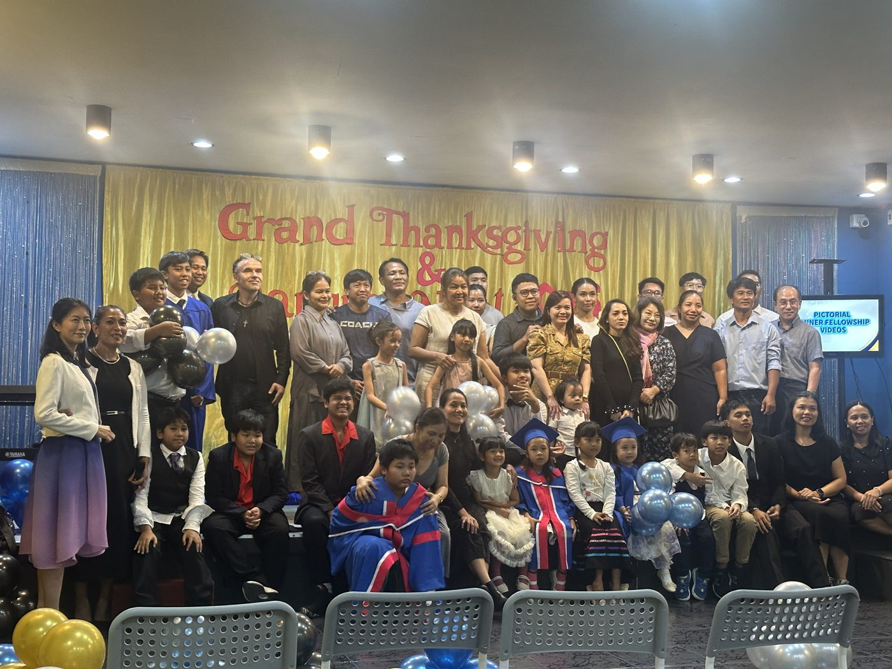
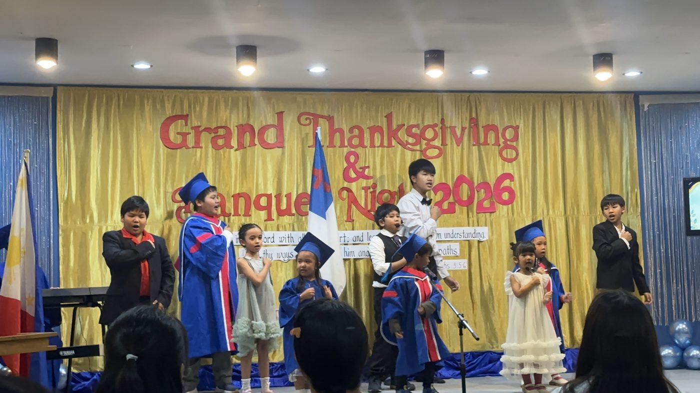
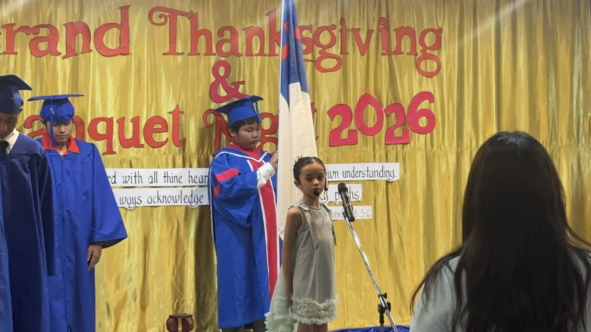
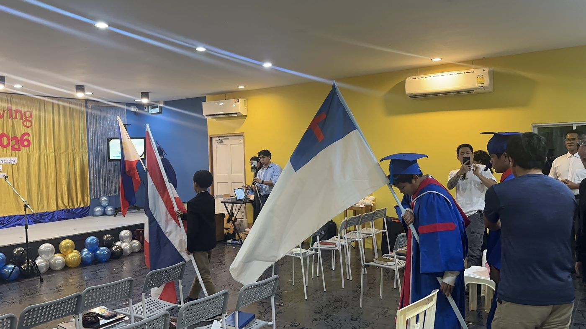
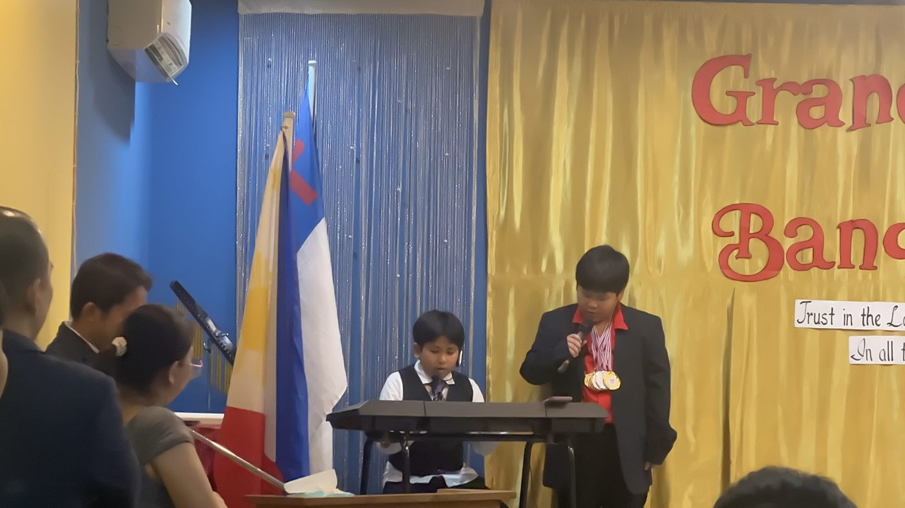
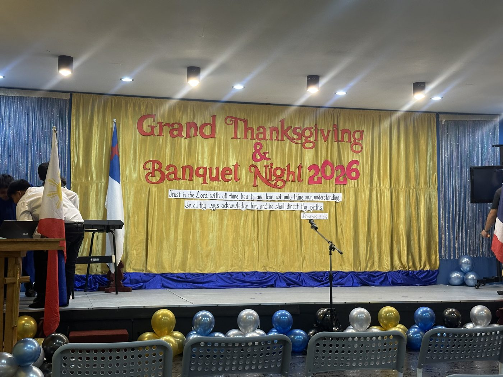

Living Grace Enhance Skills School
Une petite école communautaire en Thaïlande qui aide des enfants défavorisés à poursuivre leur scolarité tout en développant leurs compétences de base et leur confiance.

Une petite école au but clair
Living Grace est dirigée localement. Ses enseignants accueillent les enfants dans des classes simples et chaleureuses, où les leçons mêlent pratique des langues, musique, jeux et moments partagés.
Comme pour nos autres partenaires, nous soutenons le travail des enseignants et les laissons décider de ce dont les enfants ont le plus besoin.


Célébrer la fin de l'année scolaire
Familles, enseignants et élèves se sont réunis pour la soirée d'action de grâce et le banquet de fin d'année de l'école, avec une cérémonie de remise des diplômes, des drapeaux, de la musique et des prestations des élèves.






Voir les élèves en action
Photos et vidéos : Living Grace Enhance Skills School.